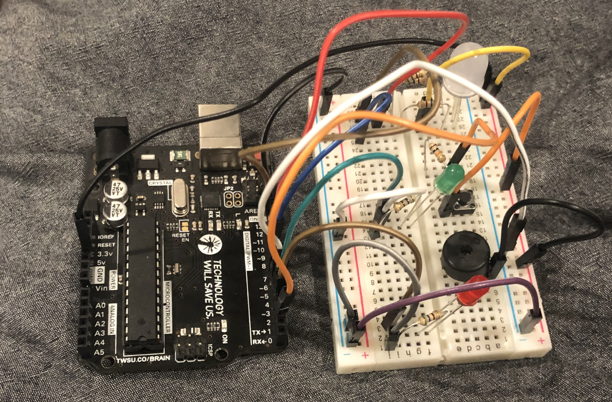

Not too long ago I bought a breadboard starter kit, since I had an old Arduino Uno lying around! Almost immediately I tried to throw together a sort of mini-computer, which currently looks like this:

My unoriginal name for it is the n9600 (the n stands for nanobot567, and 9600 is the baud rate of the serial port). Currently it can do two things, boot up and poke to memory addresses XD
I plan to write a BASIC interpreter for it and attach this LCD I also got, but that will require me to switch over to my Raspberry Pi 3 (I got that from a Kano computer kit I got when I was younger!) since it has more GPIO pins, AND I'll have to do some soldering to get the header pins on there. Hopefully I won't screw up the display, that'd be $30 down the drain!
If you clicked on this, first of all, why? Second of all, thanks for caring I guess XD
On Saturday, June 24th of 2023 at 4 PM, I started drawing because of reasons I don't want to discuss here. I guess I'm typing it out now because I want to talk to a brick wall about it, haha. But I think I've gotten a lot better at drawing, especially on the facial expression front. There's been definite improvement, which is incredibly exciting since soon I may be able to draw EXACTLY (or pretty close to) what I'm thinking of! I'm still nowhere close to the talent of some people, but as long as I can get my point across I'm happy :)